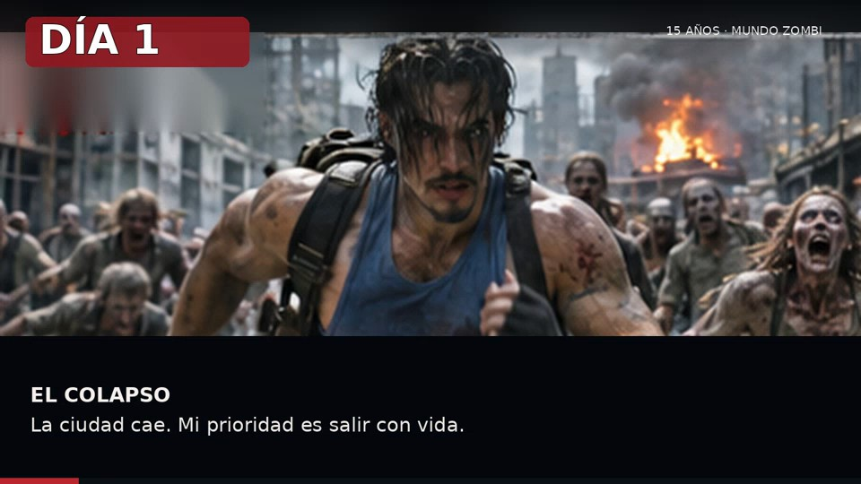

SUPERVIVENCIA · HISTORIA INTERACTIVA
15 Años: Mundo Zombi
Las decisiones pequeñas construyen el mundo que queda.
TIEMPO TRANSCURRIDODÍA 1

EL COLAPSO
La ciudad cae
Mi prioridad es salir con vida.
El primer minuto
No hay mapa, no hay señal y la calle ya no es segura. Elegí qué priorizar.
Cada elección cambia recursos, moral y comunidad.